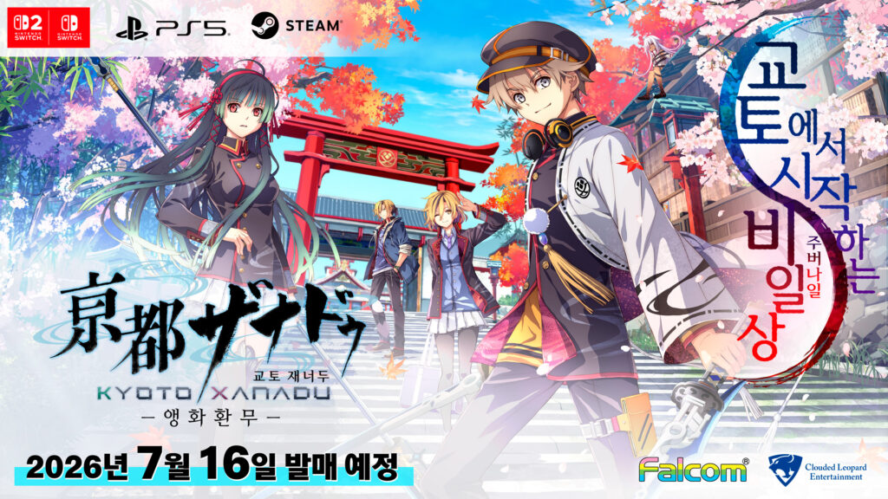
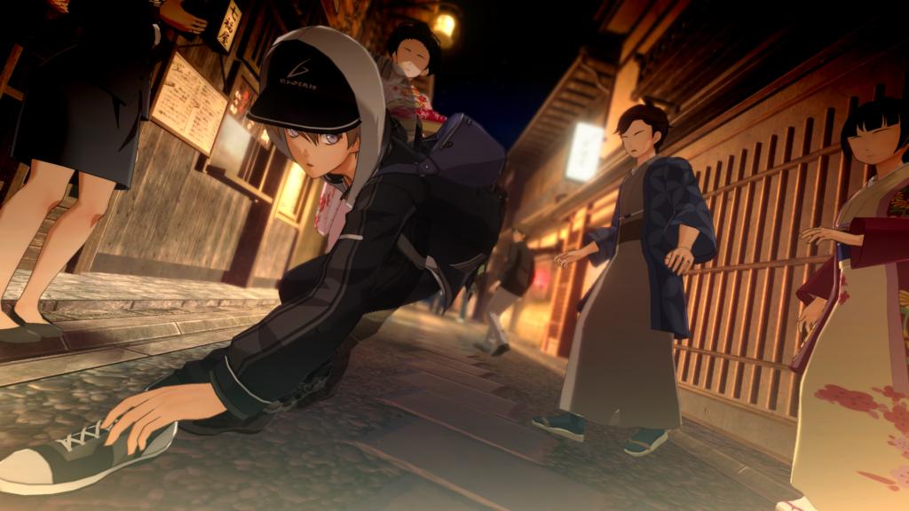

교토 재너두 -앵화환무- 발매일 7월 16일, 스위치2ㆍPS5ㆍ스팀 동시발매 니혼 팔콤 신작 게임추천
이스ㆍ궤적 시리즈만 파다 보면 가끔 이렇게 놓치는 소식이 생기더라고요. 팔콤이 다음 궤적 넘버링만 준비하고 있는 줄 알았는데, 클라우디드 레오파드 공식 홈페이지 뉴스란을 뒤적이다가 발매일이 코앞으로 잡힌 신작을 뒤늦게 발견했습니다.(ㅋㅋ) 바로 '교토 재너두 -앵화환무-'인데요, 7월 16일이면 진짜 며칠 안 남아서 부랴부랴 정리부터 들어갑니다.

주인공 일행이 교토 신사(토리이)와 벚꽃을 배경으로 서 있는 공식 키비주얼입니다.
이미지 출처: 클라우디드 레오파드 엔터테인먼트 공식
1. 교토 재너두 -앵화환무-, 어떤 게임인가 - 이스ㆍ궤적 팀 신작 맞습니다
먼저 개발ㆍ퍼블리셔부터 정확히 짚고 갈게요. 개발은 니혼 팔콤이 직접 맡았고, 국내 서비스는 클라우디드 레오파드 엔터테인먼트가 퍼블리셔로 붙었습니다. 혹시 니혼 팔콤이 낯선 분들을 위해 짧게 짚고 가면, 이스 시리즈랑 영웅전설 궤적 시리즈를 오랫동안 만들어 온 바로 그 개발사입니다. 궤적 넘버링 신작 소식만 기다리다가 이런 신작이 툭 튀어나온 셈이라, 팔콤 팬이 아니어도 이 이름 하나로 어느 정도 신뢰하고 볼 만한 라인업이라고 저는 생각합니다. 클라우디드 레오파드는 어디까지나 한국어판을 들여오는 퍼블리셔 역할이라는 것만 헷갈리지 않으시면 됩니다.
장르는 듀얼 디멘셔널 ARPG인데요, 이름 그대로 2D 액션과 3D 액션을 한 게임 안에서 오가는 구성입니다. 2D 파트는 다채로운 공격ㆍ사격 액션으로 시원시원하게 몰아치고, 3D 파트는 저스트 가드랑 일격필살 카운터처럼 타이밍 잡는 손맛 위주로 짜여 있다고 하네요. 저는 개인적으로 2D 파트가 이스 시리즈 사격ㆍ스킬 콤보 감성이랑 닮지 않았을까 기대하는 중입니다.
조금 더 파고들어 보면 2D 파트는 사격이랑 스킬 콤보를 이어 붙이면서 몰아치는 쪽이라, 이스 시리즈에서 익숙했던 그 템포감이 자연스럽게 겹쳐 보이더라고요. 3D 파트는 반대로 무빙보다 '읽기'가 중요한 구간 같습니다. 상대 공격 타이밍에 맞춰 저스트 가드를 넣고, 거기서 바로 일격필살 카운터로 꽂아 넣는 흐름이라 궤적 시리즈의 크래프트ㆍ오버 드라이브 손맛을 좋아했던 팔콤 액션 팬이라면 두 파트를 오가는 재미 자체가 셀링 포인트가 될 것 같아요. 한 게임 안에서 결이 완전히 다른 액션 두 개를 이렇게 붙여놓은 시도는 팔콤 신작 중에서도 드문 편이라, 저도 실제로 플레이해 보기 전까진 두 파트 밸런스가 어떻게 잡혔을지 궁금증이 큽니다.
스토리는 교토를 무대로, 《적격자》로 각성한 주인공 '카미야 레이'가 '히라사카 학원'에 입학하면서 이계 '재너두'와 '히라사카 대미궁' 공략에 뛰어드는 내용입니다. 공식 홈페이지 캐릭터 소개 페이지를 직접 넘겨보니 레이 말고도 여러 얼굴이 함께 올라와 있더라고요. 히로인 격으로 소개되는 '리쿠도 후카', 그리고 '나키리 카즈키'ㆍ'나키리 세나' 남매까지 확인했습니다(관계나 설정은 공식 소개에 나온 만큼만 적어 둘게요, 괜히 지어내진 않을게요). 학교에서 수업을 들으면서 파라미터를 키우고, 그렇게 쌓은 행동 카드 덱으로 재너두를 공략하는 구조라 학원물과 던전 크롤러가 섞인 그림이 그려집니다.
《적격자》로 각성해 히라사카 학원에 입학하는 주인공 '카미야 레이'입니다.
이미지 출처: 클라우디드 레오파드 엔터테인먼트 공식
2. 발매일ㆍ대응 기종 - 스위치2까지 포함해서 4개 동시발매
클라우디드 레오파드 공식 페이지 기준으로 출시일부터 표로 정리해 드릴게요. 2026년 7월 16일(목)에 한국어판까지 동시 발매로 확정됐고, 대응 기종이 닌텐도 스위치2ㆍ닌텐도 스위치ㆍPS5ㆍ스팀(PC) 네 개라 플랫폼 고민할 필요 없이 거의 다 커버되는 셈입니다.
| 기종 | 발매일 | 비고 |
|---|---|---|
| 닌텐도 스위치2 | 2026. 7. 16.(목) | 한국어판 동시발매 |
| 닌텐도 스위치 | 2026. 7. 16.(목) | 한국어판 동시발매 |
| PlayStation 5 | 2026. 7. 16.(목) | 한국어판 동시발매 |
| Steam(PC) | 2026. 7. 16.(목) | 한국어판 동시발매 |
스토어 페이지를 직접 열어보니 네 플랫폼 모두 발매일이 하루 차이도 없이 똑같이 맞춰져 있어서, 요즘 다른 신작들처럼 콘솔ㆍPC 발매일이 갈리는 경우랑은 다르더라고요. 스위치2 정식 대응까지 들어간 게 개인적으로는 제일 반가운 부분입니다.

3D 파트로 보이는 실제 게임플레이 스크린샷입니다. 교토 야간 골목을 이동하는 장면이네요.
이미지 출처: 클라우디드 레오파드 엔터테인먼트 공식
3. 가격ㆍ에디션 - 리미티드 에디션은 스팀까지 세 버전 다 나옵니다
에디션은 일반판이랑 리미티드 에디션 두 가지입니다. 일반판은 스위치ㆍPS5 패키지/디지털로 게임 본편만 담겨 있고, 리미티드 에디션은 스위치ㆍPS5ㆍ스팀 세 버전 전부 나온다는 게 특징이에요.
| 에디션 | 구성 |
|---|---|
| 일반판 | 게임 본편(스위치ㆍPS5 패키지/디지털) |
| 리미티드 에디션 (스위치ㆍPS5ㆍ스팀) | 특제 아트박스ㆍ미니 사운드트랙(버추얼 가수 'LinoN' 주제가 'Outer Sky' 수록)ㆍ히라사카 학원 행동 카드 컴플리트 세트(15장)ㆍ레이&후카 전용 의상 DLC '히라사카의 꽃-창-'ㆍ목제 각인 코스터 |
구성품 하나하나를 조금 더 풀어보면요, 특제 아트박스는 그냥 화려한 상자가 아니라 '1,200년 전 교토를 그린 음양화' 콘셉트로 일러스트를 새로 그려 넣었다고 합니다. 미니 사운드트랙에는 버추얼 싱어 'LinoN'이 부른 주제가 'Outer Sky'가 수록돼 있고요. 행동 카드는 게임 안에서 실제로 쓰는 카드 컴플리트 세트로 15장이 통째로 들어가는데, 아래 보이는 치비 일러스트 카드들이 바로 이 세트 느낌입니다. 여기에 레이ㆍ후카 전용 의상 DLC '히라사카의 꽃-창-'이랑 목제 각인 코스터까지 얹히니까, 굿즈 욕심 있는 분들은 리미티드 에디션 쪽이 확실히 끌릴 구성이에요.
정가(희망소비자가) 자체는 이 글을 쓰는 시점까지 공식 미발표 상태입니다. 다만 리미티드 에디션 쪽은 유통사 예약 페이지에 판매가가 이미 떠 있는데, 대략 10만 원대 초반(약 103,700원) 선으로 잡혀 있더라고요. 이 금액이 공식 희망소비자가로 확정된 건 아니고 유통사 예약가 기준이라는 점은 감안해서 봐 주세요. 정확한 정가는 공식 발표되는 대로 이 글에 다시 채워 넣을게요.
리미티드 에디션에 들어가는 행동 카드 세트 등 구성품입니다.
이미지 출처: 클라우디드 레오파드 엔터테인먼트 공식
히라사카 학원 휘장이 새겨진 목제 각인 코스터입니다.
이미지 출처: 클라우디드 레오파드 엔터테인먼트 공식
4. 언어 지원 - 한글은 '자막'입니다, 풀더빙은 아니에요
한글화 범위를 헷갈리시는 분들이 있을 것 같아 정확히 짚을게요. 음성은 일본어만 지원하고, 자막이 한국어ㆍ번체중문ㆍ간체중문으로 들어갑니다. 그러니까 더빙이 아니라 자막 지원이라는 뜻이에요. 최근 나온 팔콤 이식작들이 대부분 이 방식이라 저는 이 정도로도 충분히 반갑던데, 풀보이스 더빙까지 기대하셨던 분들은 미리 알아두시면 좋겠습니다.
5. 사전예약ㆍ선행 플레이 - LinoN 서포트카드가 예약 특전
예약판매는 인벤 보도 기준 7월 3일부터 7월 15일까지 온ㆍ오프라인 매장에서 진행된다고 알려졌습니다. 매장마다 일정이 조금씩 다를 수 있으니 예약 전에 한 번씩 확인해 보세요. 이 기간에 예약ㆍ초회 구매하시면 서포트 카드 'LinoN' DLC가 특전으로 붙는데, 학교 수업을 들을 때 효과를 강화해 주는 카드라고 하네요.
선행 체험 소식도 하나 있었는데요, 7월 9일에 온라인 선행 플레이가 진행됐다는 보도가 있었습니다. 저는 실시간으로는 못 봤고, 다시보기라도 찾아서 직접 챙겨볼 생각입니다. 참고로 국내 심의등급은 15세이용가로 잡혔다고 하네요.
정리하고 보니 이스ㆍ궤적만 챙겨보던 저한테도 은근히 끌리는 구성이네요. 학원물에 2D+3D 액션을 같이 넣는다는 발상 자체가 낯설면서도 궁금하고, 스위치2까지 동시발매로 챙겨준 것도 팔콤답지 않게(?) 부지런한 느낌입니다. 정가만 아직 확정 전일 뿐 나머지 정보는 거의 다 풀렸으니, 7월 16일까지 남은 며칠은 예약판매 페이지나 한 번씩 들여다보면서 기다려야겠습니다. 정가 확정되는 대로 다시 와서 채워 넣을게요.
▶ 같이 보면 좋은 글
· 교토 재너두 관련 글은 이제 시작이라 아직 없는데요, 공략이든 리뷰든 나오는 대로 하나씩 여기에 채워둘게요.